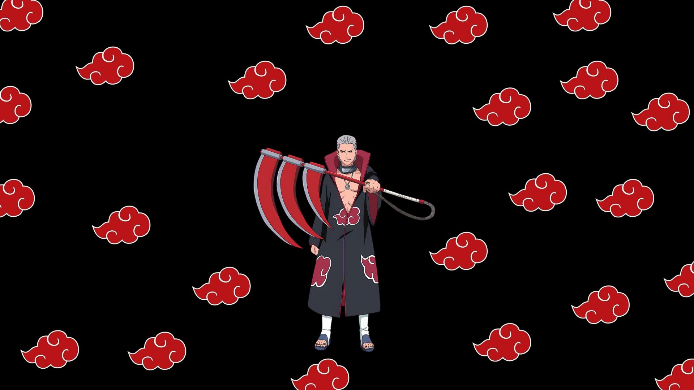
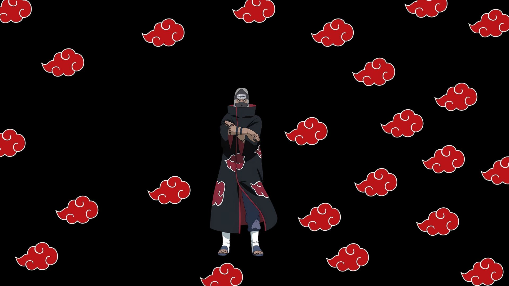
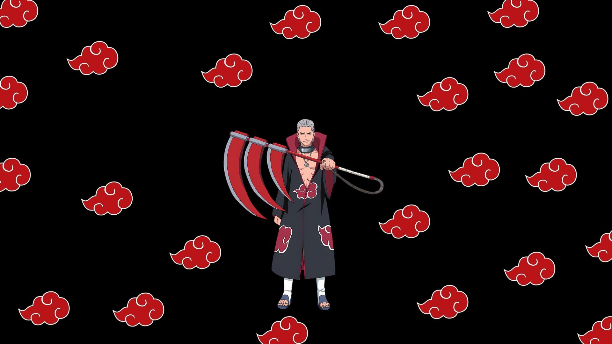
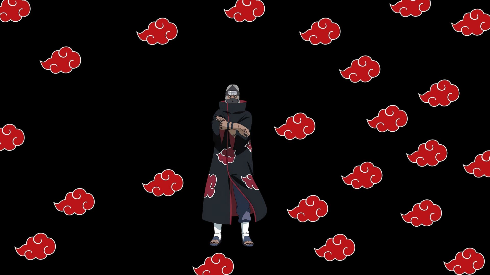

Akatsuki
A Akatsuki é uma temida organização do universo Naruto, inicialmente criada por Yahiko, Nagato e Konan para trazer paz ao mundo shinobi durante a Terceira Guerra Mundial. Originalmente pacifista sob Yahiko, a organização mudou de foco após sua morte, com Nagato (Pain) buscando impor a paz por meio do medo e da captura das Bijuu. Seus membros são conhecidos pelos mantos negros com nuvens vermelhas, anéis únicos e unhas pintadas de preto.
Pain/Nagato
Pain, ou Nagato Uzumaki, é um shinobi de Amegakure e cofundador da Akatsuki. Após perder seus pais na Segunda Grande Guerra Shinobi, Nagato desejou a paz. Junto com Yahiko e Konan, fundou a Akatsuki para promover harmonia, mas, após a morte de Yahiko, Nagato se tornou o líder, acreditando que a paz poderia ser alcançada através da dor e do medo. Com o Rinnegan, um doujutsu poderoso recebido de Madara Uchiha, ele controla seis corpos conhecidos como Os Seis Caminhos de Pain, cada um com habilidades únicas. Nagato possui habilidades como controle da gravidade, absorção de ninjutsu, invocação de criaturas e controle sobre almas, e é proficiente em todos os cinco tipos de chakra elementares.
Konan
Konan nasceu em Amegakure e perdeu seus pais na Segunda Grande Guerra Ninja. Encontrada por Yahiko, ela se juntou a ele e a Nagato para formar a Akatsuki, inicialmente voltada para a paz. Após a morte de Yahiko, Konan apoiou Nagato (Pain) na liderança da organização. Ela é conhecida pelo ninjutsu de papel, que permite criar armas e se transformar em folhas de papel, além de técnicas como a Dança do Shikigami e o Clone de Papel. Após a morte de Nagato, Konan desertou da Akatsuki e tornou-se líder de Amegakure, continuando a buscar a paz.
Itachi Uchiha
Itachi Uchiha, prodígio de Konohagakure, se formou na academia ninja aos 7 anos e se tornou Chunnin aos 10. Aos 13, já era capitão da Anbu. Famoso por ter assassinado seu clã, poupando apenas seu irmão Sasuke, Itachi se tornou um criminoso internacional e membro da Akatsuki, onde atuou com Kisame Hoshigaki. Ele possuía o Sharingan e o Mangekyō Sharingan, que lhe concediam habilidades como Tsukuyomi, Amaterasu e Susanoo, e era mestre em ninjutsu, taijutsu e genjutsu, sendo um dos ninjas mais poderosos de sua época.
Kisame Hoshigaki
Kisame Hoshigaki, conhecido como o "monstro da Névoa Oculta", é um ninja renegado de Kirigakure e ex-membro dos sete espadachins da névoa, famoso por sua brutalidade e habilidade em combate. Antes de entrar para a Akatsuki, eliminou seus próprios companheiros para proteger informações do seu clã. Na Akatsuki, trabalhou ao lado de Itachi Uchiha, a quem respeitava muito. Com chakra comparável ao de uma Bijuu, Kisame era um adversário formidável e mestre em técnicas do Estilo Água, capaz de criar água em locais secos. Sua espada, Samehada, absorvia chakra e se fundia com ele, tornando-o um dos membros mais temidos da organização.
Deidara
Deidara, originário de Iwagakure, possuía o Kekkei Genkai de liberação de explosão, que lhe permitia criar explosões poderosas com argila especial. Após roubar um kinjutsu que infunde chakra em substâncias, deixou sua vila e foi recrutado por Itachi Uchiha, Kisame Hoshigaki e Sasori. Na Akatsuki, foi parceiro de Sasori e depois de Tobi, destacando-se como um dos membros mais jovens. Deidara via suas explosões como arte e moldava argila explosiva em formas como pássaros e dragões. Suas técnicas incluem o C3, uma bomba massiva capaz de destruir uma vila inteira, e o C4, que libera micro-bombas que desintegram inimigos a nível celular.
Sasori
Sasori, conhecido como Sasori da Areia Vermelha, nasceu em Sunagakure e perdeu seus pais ainda jovem, sendo criado por sua avó Chiyo, que lhe ensinou a arte das marionetes. Ele se destacou criando marionetes realistas, incluindo réplicas de seus pais. Na Akatsuki, Sasori começou como parceiro de Orochimaru e depois se juntou a Deidara. Mestre em marionetes, ele transformou seu corpo em uma marionete, ganhando habilidades únicas e maior longevidade. Suas marionetes mais notáveis eram Hiruko, usado como armadura, e o Terceiro Kazekage, transformado em uma marionete humana.
Hidan
Hidan nasceu em Yugakure e se frustrou com a transformação de sua vila em destino turístico, acreditando que os shinobi deveriam ser guerreiros. Ele se juntou ao culto de Jashin, que prega a destruição, e foi recrutado pela Akatsuki, formando uma dupla com Kakuzu conhecida como Dueto Zumbi. A habilidade mais notável de Hidan é sua imortalidade, obtida por meio dos rituais de Jashin. Ele usa sua foice de três lâminas para coletar o sangue dos oponentes e realiza um ritual que transfere qualquer dano que ele inflige a si mesmo para a vítima, permitindo-lhe matar de forma dolorosa e ritualística.
Kakuzu
Kakuzu nasceu em Takigakure e foi severamente punido após falhar em assassinar Hashirama Senju. Em retaliação, matou os anciãos da vila, roubou seus corações e fugiu com técnicas proibidas. Na Akatsuki, formou dupla com Hidan e atuou como tesoureiro, sempre em busca de recompensas. Kakuzu possuía a técnica Jiongu, que lhe permitia costurar partes de corpos e prolongar sua vida ao roubar corações. Ele usava até cinco corações, cada um representando um elemento — Terra, Água, Fogo, Vento e Raio —, permitindo-lhe empregar uma variedade de jutsus elementares.
Zetsu
Zetsu é um membro da Akatsuki composto por duas entidades: Zetsu Branco e Zetsu Negro. O Zetsu Branco, criado a partir das células de Hashirama Senju, é brincalhão e pode se fundir com o ambiente, tornando-se invisível e criando clones, usados em grande número na Quarta Grande Guerra Mundial Shinobi. Já o Zetsu Negro é sério e sombrio, originado da vontade de Kaguya Otsutsuki. Ele atuou como espião e informante da Akatsuki, coletando informações e ajudando na execução do Plano Olho da Lua de Madara Uchiha.
Tobi
Tobi, também conhecido como Obito Uchiha, foi um ninja de Konohagakure e membro do time Minato, junto com Kakashi e Rin. Ele foi dado como morto na Terceira Guerra Mundial Shinobi, mas foi resgatado por Madara Uchiha. Após testemunhar a morte de Rin, Obito adotou a identidade de Tobi e passou a trabalhar no Plano Olho da Lua, que visava criar um mundo sem sofrimento. Tobi aparece como parceiro de Deidara após a morte de Sasori, usando uma máscara laranja com um padrão espiral que cobre seu rosto. Entre suas habilidades estão o Kamui, que lhe permite teletransportar partes do corpo para outra dimensão; manipulação de Zetsu, que possibilita regeneração e criação de extensões do corpo; e controle sobre bestas com cauda, utilizando Sharingan e Rinnegan.